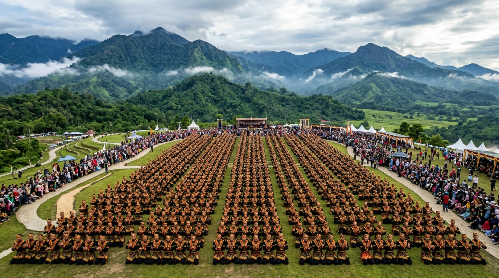

Sejarah & Nilai Filosofis Tari Saman
Dari tarian dakwah para ulama Gayo di abad ke-14 hingga menjadi salah satu warisan budaya Indonesia yang paling terkenal di dunia internasional.
Asal-Usul dan Pencipta
Tari Saman diciptakan oleh seorang ulama besar Islam bernama Syekh Saman sekitar abad ke-14 Masehi di Dataran Tinggi Gayo, yang sekarang masuk ke wilayah Kabupaten Gayo Lues, Provinsi Aceh.
Awalnya, tarian ini merupakan permainan rakyat sederhana bernama Pok Ane. Melihat minat masyarakat yang sangat tinggi, Syekh Saman kemudian mengembangkannya dengan memasukkan syair-syair pujian kepada Allah SWT, shalawat nabi, serta nasihat tentang tata krama dan budi pekerti dalam Bahasa Gayo.
4 Gerakan Utama & Maknanya
1. Tepuk Dada (Tepuk Dade)
Menepuk dada dengan telapak tangan secara bergantian atau bersamaan. Menghasilkan suara dentuman rendah yang melambangkan keberanian dan keteguhan hati.
2. Tepuk Tangan
Tepukan kedua telapak tangan yang menghasilkan suara renyah dan cepat. Melambangkan kegembiraan dan kebersamaan saat musyawarah.
3. Liukan Badan (Lingang)
Gerakan meliukkan tubuh ke kiri dan kanan secara berseling (bergantian antara penari nomor ganjil dan genap). Melambangkan sikap fleksibel dan toleransi.
4. Duduk Bersimpuh (Sepo)
Semua penari duduk berlutut dan merapatkan bahu satu sama lain. Menggambarkan kesetaraan derajat sesama manusia di hadapan Sang Pencipta.
Struktur Posisi Penari (Saf)
Dalam satu barisan (biasanya berjumlah ganjil, misalnya 9, 11, atau 13 orang), setiap penari memiliki fungsi penting:
- • Syekh (Posisi Tengah): Pemimpin tarian yang melantunkan syair, mengatur tempo cepat-lambat, dan memberi aba-aba gerak.
- • Pengapit (Kiri & Kanan Syekh): Membantu Syekh menyambung vokal ketika mengambil nafas dan menjaga kestabilan tempo awal.
- • Penyepit (Sisi Luar): Bertugas merapatkan barisan agar formasi tetap lurus dan tidak berantakan saat liukan tajam.
- • Penopang (Paling Ujung Kiri & Kanan): Menahan tumpuan tubuh barisan penari agar tidak jatuh saat bergerak miring ekstrem.
Pengakuan Dunia & Rekor Kolosal

Rekor Dunia 10.001 Penari di Stadion Seribu Bukit
Pada tahun 2014 dan 2017, Kabupaten Gayo Lues memecahkan rekor dunia MURI dengan mengumpulkan lebih dari 10.001 penari Saman dari berbagai pelosok desa. Ribuan warga menari bersama secara serempak di atas lapangan terbuka dengan latar pegunungan asri, membuktikan betapa kuatnya rasa kebersamaan masyarakat Gayo.
Pengakuan UNESCO pada tanggal 24 November 2011 menjadi bukti resmi bahwa Tari Saman adalah warisan kemanusiaan dunia yang harus dijaga keasliannya oleh seluruh rakyat Indonesia.